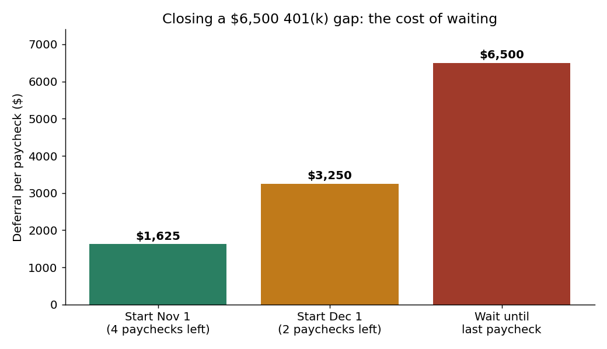
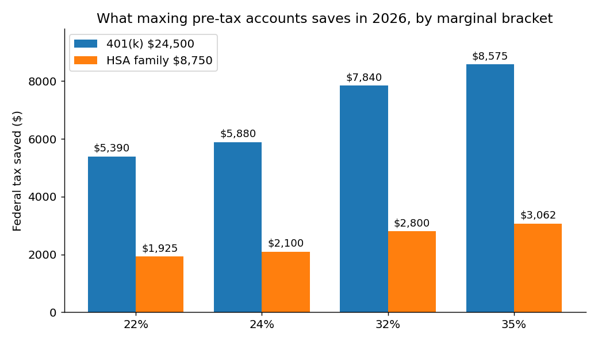
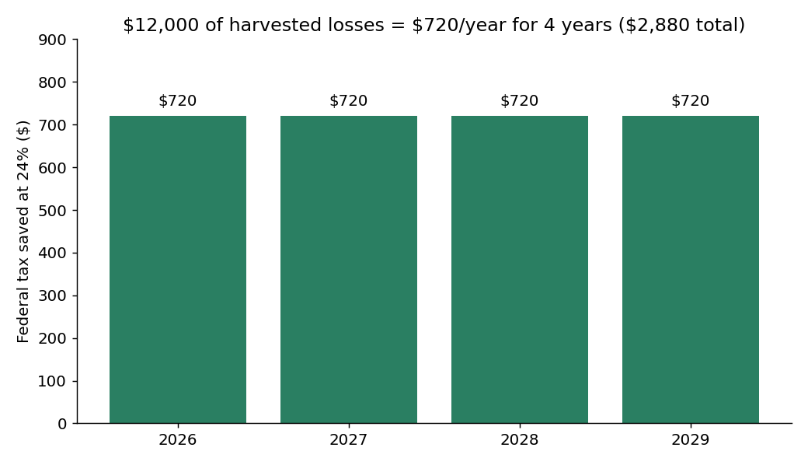

November 1 is the last honest date on the tax calendar. After today, every move on this list gets harder: fewer paychecks to fix a 401(k) shortfall, fewer trading days to harvest losses cleanly, fewer weeks to get a charitable gift or a Roth conversion settled. None of these moves require a new account, a new employer, or a decision you will regret in January. They just require doing them before the deadlines that actually bind — and for most of them, that deadline is December 31, not April 15.
All figures below are for tax year 2026, from IRS Notice 2025-67 and Revenue Procedure 2025-32.
The two deadlines that matter
Half the year-end mistakes H-1B holders make come from confusing these two dates:
- December 31, 2026 — hard stop. 401(k) deferrals (they only come out of paychecks, so the money must leave a 2026 paycheck), Roth conversions (the conversion counts in the year it happens), charitable gifts, and tax-loss harvesting sales.
- April 15, 2027 — the extension. IRA contributions and direct (non-payroll) HSA contributions for 2026 can still be made up to the filing deadline. If you miss December 31 on these two, you get a second chance. On everything else, you don't.
That split is the whole checklist: do the December 31 items now, and schedule the April 15 items before you forget them in the spring.
Move 1: Top up the 401(k) — but count your paychecks first
The 2026 employee deferral limit is $24,500 ($32,500 if you are 50 or older). The catch nobody mentions: you cannot write a check to your 401(k) in December. The only way money gets in is through payroll, and most payroll systems need one pay cycle to process a change.
Check your year-to-date deferral on your last pay stub right now. Suppose you have contributed $18,000 so far and you are paid biweekly. You have $6,500 of room left and roughly 4 paychecks remaining:
- Start now: $1,625 per paycheck — noticeable, but survivable.
- Wait until December: $3,250 per paycheck — and if your plan caps deferrals as a percentage of pay, you may not even be allowed to cram that much in.
- Wait until the last paycheck: the full $6,500 in one check, if the plan allows it at all — and if it doesn't, the room is gone forever. Unused 401(k) room does not roll over.

The payoff is straightforward. At a 24% marginal rate, maxing the $24,500 saves $5,880 in federal tax; at 32%, $7,840. And if you are in the common H-1B trap of being covered by a workplace plan at a high income, the 401(k) is your most reliable deduction — unlike the IRA deduction, which phases out entirely for covered workers (single: $81,000–$91,000; joint: $129,000–$149,000 of MAGI in 2026).

Move 2: Use the HSA's payroll superpower
The 2026 HSA limits are $4,400 self-only and $8,750 family (plus $1,000 at 55+). Contributions made through payroll dodge not just income tax but also Social Security and Medicare tax — about 7.65% extra on top of your bracket. A family max of $8,750 through payroll at a 24% bracket saves $2,100 in income tax plus roughly $669 in payroll tax: $2,769 total, for money you can spend on medical costs tax-free or invest for retirement.
Direct HSA contributions (from your bank account) can wait until April 15, 2027 — but they only save income tax, not payroll tax. If you still have HSA room and paychecks left, route it through payroll before December 31. The April deadline is a fallback, not the plan.
Move 3: Decide on a Roth conversion before December 31
A Roth conversion — moving pre-tax IRA money to a Roth IRA and paying tax on it now — counts as income in the year you do it. There is no April extension. Conversions make sense in a lower-income year: a gap between jobs, a year with a smaller bonus, or a year before RSU income spikes. They make much less sense in a peak-earning year, when every converted dollar is taxed at your top rate.
Worked example: convert $20,000 in a year your marginal rate is 24%, and the tax is $4,800. Convert the same $20,000 in a 35% year and it is $7,000 — a $2,200 difference for the same move. And watch the pro-rata rule: if you hold pre-tax IRA balances, part of every conversion is taxable whether you like it or not (see the earlier post on the pro-rata trap before converting).
One H-1B note: a conversion is investment activity, not employment — it does not need employer sponsorship. But a conversion raises your AGI, which can phase out other things (IRA deductibility, the SALT phase-down below). Run the full return, not just the conversion, before you click.
Move 4: Harvest losses — and respect the 30-day wash-sale clock
Tax-loss harvesting means selling investments that are down in a taxable brokerage account to bank losses. The rules are simple and strict:
- Losses offset capital gains dollar for dollar, plus up to $3,000 per year against ordinary income. Excess losses carry forward indefinitely.
- The wash-sale rule: if you buy the same or a "substantially identical" security within 30 days before or after the sale, the loss is disallowed. That includes buying it inside your IRA — the IRS has ruled that an IRA purchase triggers the wash sale too, and the loss is then permanently gone, not deferred.
- The loss must be realized by December 31. An unrealized loss on December 31 is worth $0 on your 2026 return.
Worked example: you harvest $12,000 of losses in 2026 with no gains to offset. You deduct $3,000 against ordinary income in 2026, 2027, 2028, and 2029. At a 24% bracket, that is $720 a year, $2,880 total — real money for selling something you were going to rebalance anyway.

Don't harvest a loss and immediately rebuy the same fund in your 401(k) or IRA thinking you outsmarted the rule — that is the most common way a clean harvest gets disallowed. Swap into a similar-but-not-identical fund for 31 days, or just sit in cash.
Move 5: Check the charitable math — the 2026 rules changed
Two 2026 changes matter here, both from the One Big Beautiful Bill Act:
- The standard deduction is $16,100 single / $32,200 joint in 2026. If your itemized deductions don't beat that number, your charitable gifts buy you no federal deduction at all — unless you bunch several years of giving into one year (for example, through a donor-advised fund), which is exactly the strategy from the earlier bunching post.
- Even standard-deduction filers get a break now: up to $1,000 single / $2,000 joint of charitable gifts is deductible in 2026 without itemizing. If you take the standard deduction, make sure at least that much of your giving is documented (cash gifts to qualified charities, receipts kept) — it is a deduction most people will leave on the table by accident.
- The SALT deduction cap rose to $40,400 in 2026, but it phases down for higher earners (above $505,000 of MAGI). If you are a high earner in California, don't assume the full $40,400 — check where the phase-down leaves you before counting it in your itemizing math.
Charitable gifts, like conversions, must be completed by December 31. A DAF contribution made on December 30 counts for 2026 even if the grants to charities go out in 2027.
Move 6: Close the RSU withholding gap before the Q4 estimate is due
This one ties directly to the RSU post: employers withhold supplemental wages at a flat 22% federal rate, but most H-1B tech workers sit in the 24%, 32%, or 35% bracket. If you had big vests or a year-end bonus in 2026, your W-2 withholding is probably short — and the IRS charges underpayment penalties for tax that should have been paid during the year.
The fix that still works in November: the Q4 estimated payment, due January 15, 2027. And the safe harbor protects you from penalties if you pay the smaller of 90% of this year's tax or 110% of last year's tax (when last year's AGI topped $150,000). Run a quick projection now — last year's return plus this year's pay stubs plus vest confirmations — and send the estimate if you are short. A $5,000 estimate in January beats a penalty plus a surprise bill in April.
What not to do
- Don't assume April 15 saves you. 401(k) room, Roth conversions, charitable gifts, and harvested losses all die on December 31. The April deadline covers only IRA and direct HSA contributions.
- Don't fund a tax bill with income your visa doesn't allow. On an H-1B, side consulting, a second job, or a side business to cover a tax gap is off-limits — the bill has to come from your own cash flow or savings. That is why the withholding check in Move 6 comes before April, not after.
- Don't harvest a loss into your IRA. A wash sale triggered by an IRA repurchase permanently kills the loss.
- Don't convert to Roth in your highest-earning year without running the numbers. A conversion at 35% that could have waited for a 24% year is a $2,200 mistake per $20,000 converted.
- Don't bunch charity or max accounts with money you need for your layoff buffer. The emergency fund comes first — a tax deduction is worthless if a layoff in January forces you to raid a retirement account for rent.
- Don't file with a $0 RSU basis. If you sold vested shares this year, check every 1099-B against your vest confirmations and fix the basis on Form 8949, code B — or you pay tax twice on the same dollars.
Takeaways
- December 31 is the real deadline for 401(k) deferrals, Roth conversions, charitable gifts, and loss harvesting; only IRA and direct HSA contributions extend to April 15, 2027.
- A $6,500 401(k) gap costs $1,625 per paycheck if you start now, $3,250 if you wait until December — check your last pay stub today.
- Maxing a 401(k) ($24,500) plus a family HSA ($8,750) through payroll saves $7,980 in federal tax at a 24% bracket, plus ~$669 in payroll tax on the HSA.
- $12,000 of harvested losses is worth $2,880 over four years at 24% — but only if you dodge the 30-day wash-sale rule, including IRA repurchases.
- 2026's new rules: $32,200 joint standard deduction, a $1,000/$2,000 charity deduction even for standard-deduction filers, and a $40,400 SALT cap that phases down for high earners.
- Run the withholding projection now and pay the Q4 estimate by January 15, 2027 if your RSU vests left you short — the safe harbor (90% of this year / 110% of last year) kills the penalty.
This post is for education only — not tax, legal, or investment advice. Immigration questions need an immigration attorney.